Home | Documents | About | GitHub
 An itty bitty game engine.
An itty bitty game engine.
Get Bitty Engine
Trial available on Steam also.
About Bitty Engine
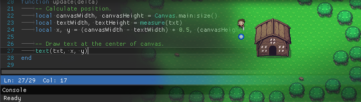
Bitty Engine is a cross-platform itty bitty Game Engine and open-source Framework. The full featured engine is programmable in Lua and integrated with built-in editors. It keeps the nature of both engine's productivity, and fantasy computer/console's ease to iterate. It boosts your commercial/non-commercial projects, prototypes, game jams, or just thought experiments.
Why Bitty Engine?
Bitty Engine has everything built-in for coding, graphics composing, etc; it has a full featured debugger for breakpoint, variable inspecting, stepping, and call-stack traversing; it offers a set of well-designed API with full documentation; it builds fast binaries with code and asset obfuscating, moreover its package size is small (around 10MB with empty project, other engine outputs more than 10 times bigger).
It is supposed to be your ultimate 2D game creating software.
Features
Bitty Engine offers a set of orthogonal features that makes game development comfortable and enjoyable.
- Programmable in Lua, an easy to learn and widely used programming language
- Debugger with scope inspector, breakpoint support and stepping
- Easy to use API for resources, graphics, input, audio, and more other facilities
- Built-in libraries for File, File System, Archive, JSON, Network, etc.
- Various example projects
- Handy tools for editing sprite, map, image, text, JSON, etc.
- Project can be exported into standalone binary
Technical specifications
- Display: configurable resolution
- Code: Lua, supports multiple source files
- Image: either true-color (PNG, JPG, BMP, TGA) or paletted, up to 1024x1024 pixels per file
- Palette: 256 colors with transparency support
- Sprite: up to 1024x1024 pixels per frame, up to 1024 frames per sprite
- Map: up to 4096x4096 tiles per page
- Font: supports Bitmap and TrueType
- Audio: 1 BGM channel, 4 SFX channels; supports MP3, OGG, WAV, etc.
- Gamepad: 6 buttons for each pad (D-Pad + A/B), up to 2 players
- Keyboard and mouse: supported
Make your own games

Edit code
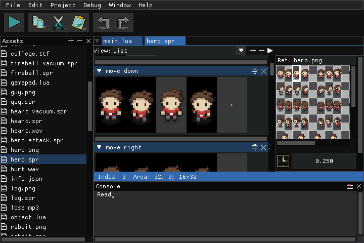
Edit sprite
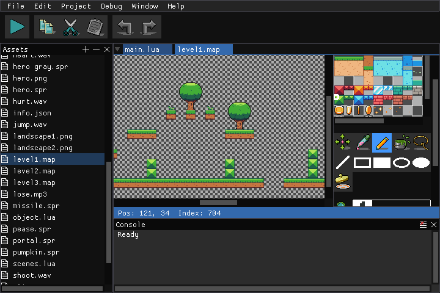
Edit map
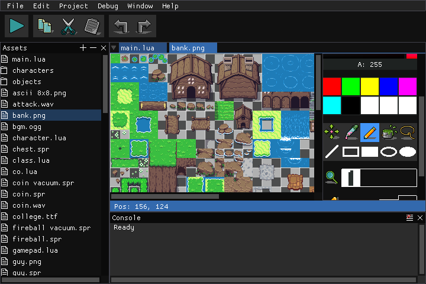
Edit image
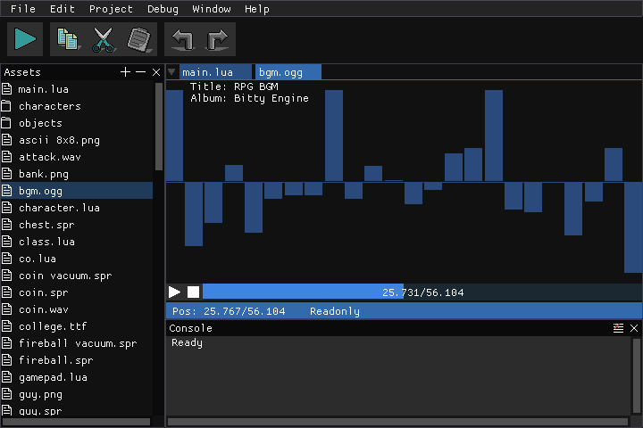
View sound
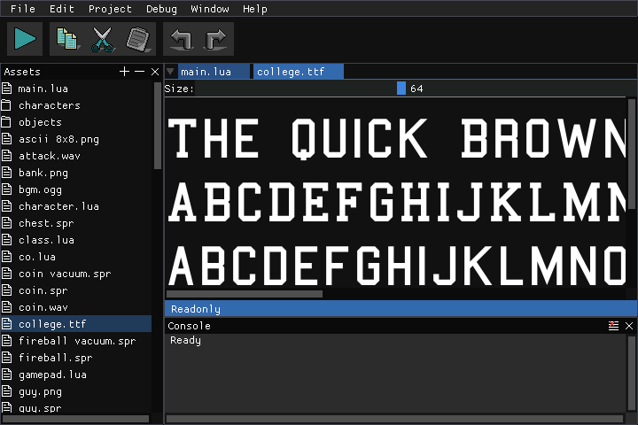
View font
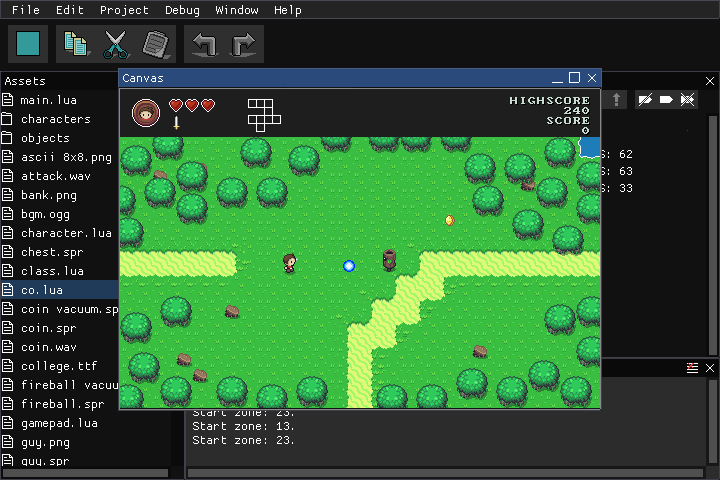
Play
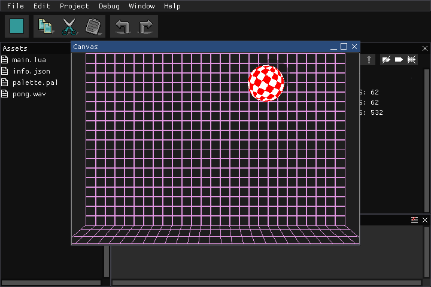
Palette
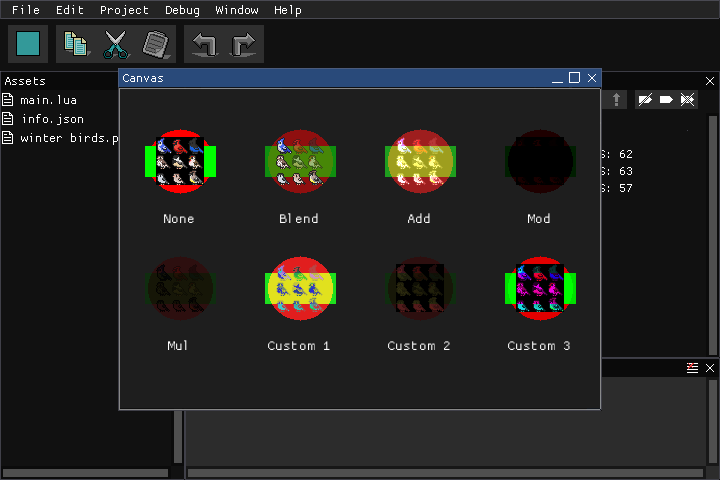
Blend
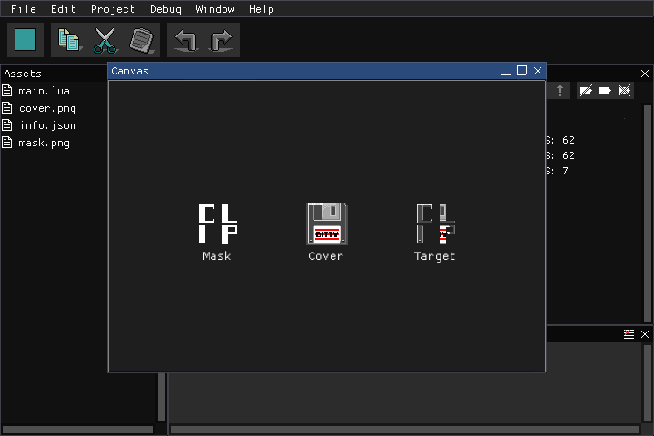
Custom clip
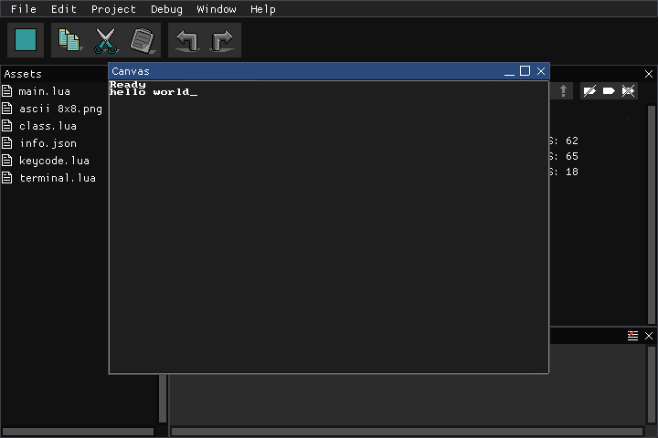
Terminal
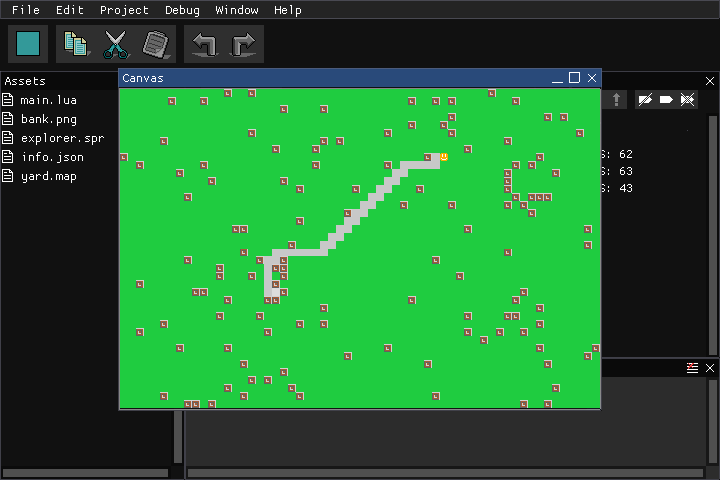
Pathfinding
Redistribute
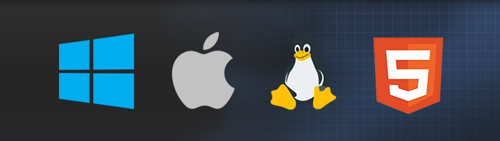
Bitty Engine helps you to make standalone binaries for Windows, MacOS, Linux and HTML (WebAssembly). It is redistributable for both non-commercial and commercial use without extra fee, your project is totally yours.
Put an image at "../icon.png" relative to executable to customize the icon dynamically. Put an image at "../splash.png" as well to customize the splash; the image could be transparent.
You can also customize redistributable binary by compiling from source.
Get Bitty Engine
Get the trial version from Steam also to try out language, libraries, editors, pipelines, etc.
System requirements
| Minimum | |
|---|---|
| OS | Windows 7 or later (32/64bit), MacOS 10.7 or later (64bit), Ubuntu 14 or later (32/64bit) |
| Processor | 1.5GHz |
| Memory | 512 MB RAM |
| Graphics | Intel HD |
| Storage | 150 MB available space |